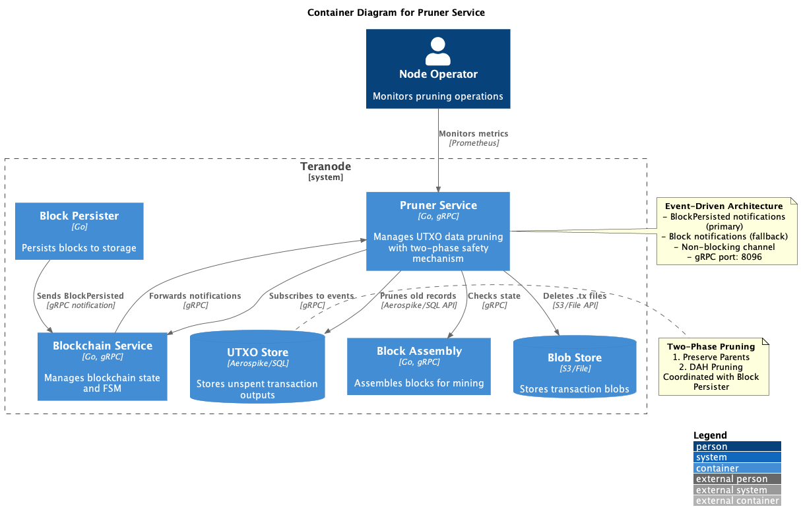
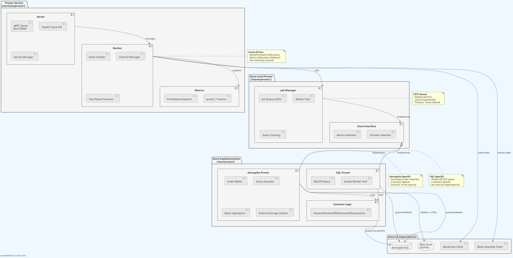
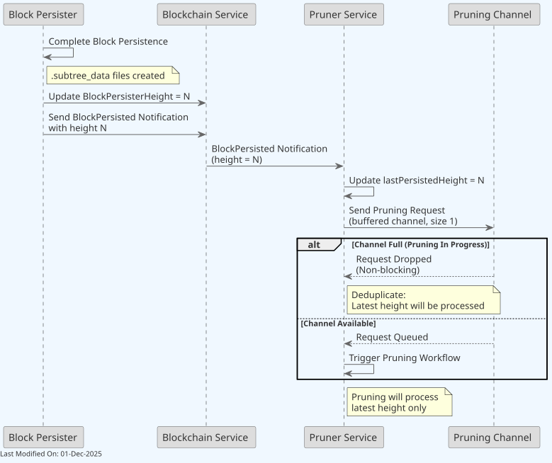
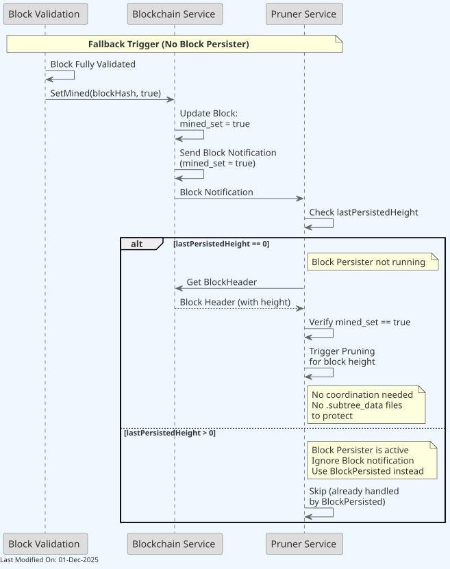
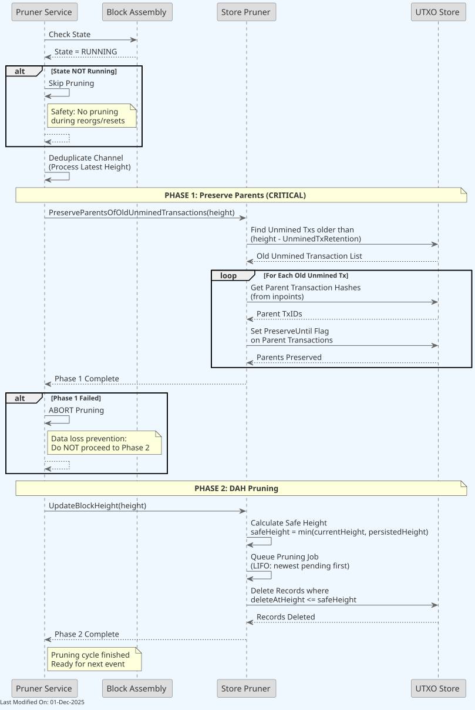
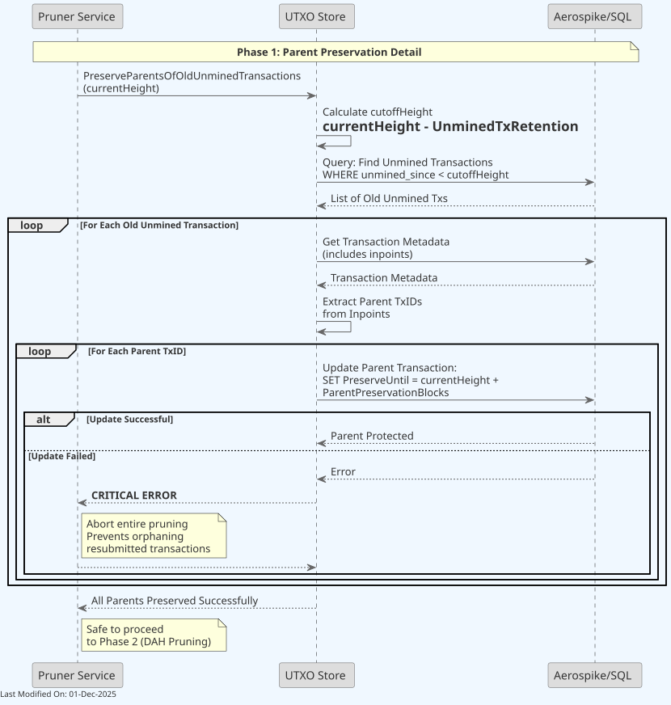
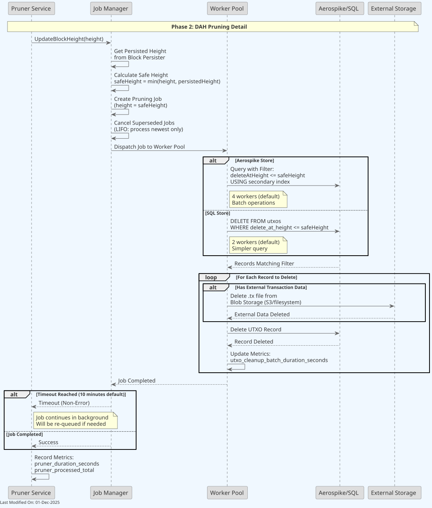
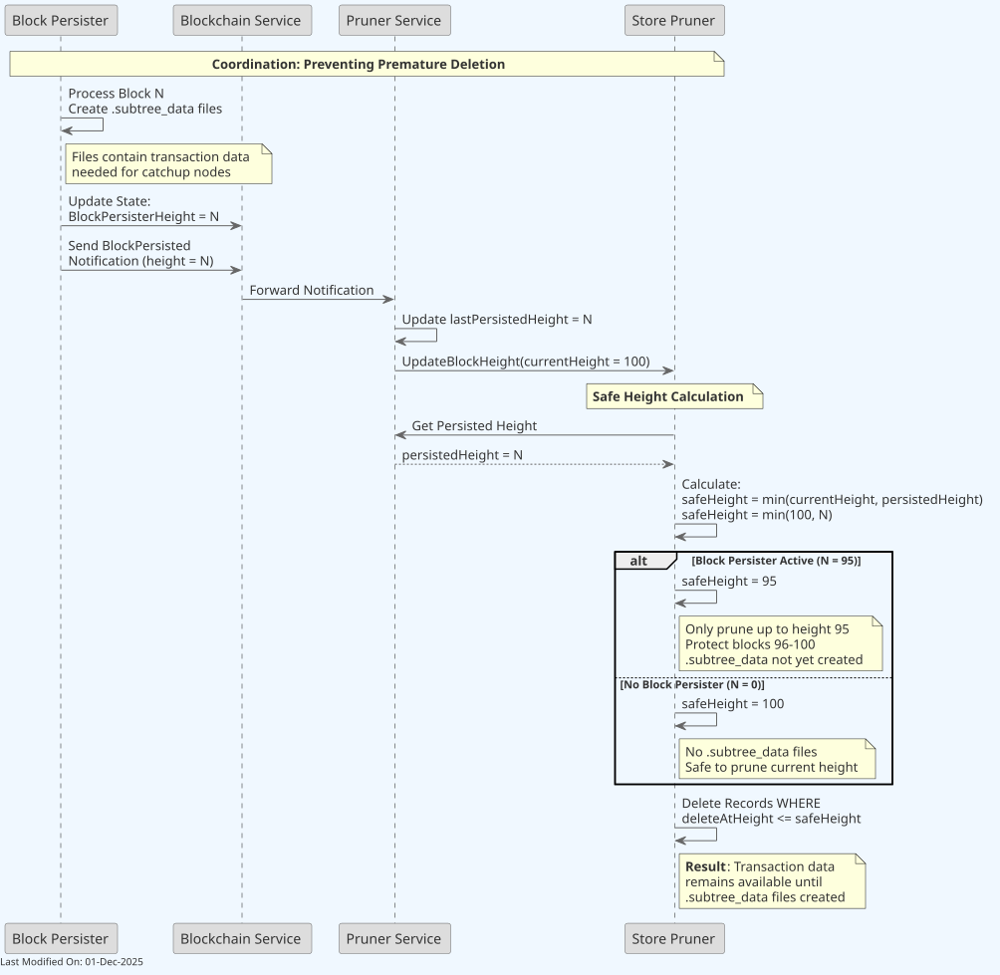

🗑️ Pruner Service¶
Index¶
- Description
- Functionality
- Data Model
- Technology
- Directory Structure and Main Files
- How to Run
- Configuration Options (Settings Flags)
- Other Resources
1. Description¶
The Pruner service is a standalone microservice responsible for managing UTXO data pruning operations in Teranode. The Pruner operates as an event-driven overlay service that continuously monitors blockchain events and removes stale UTXO data to prevent unbounded database growth.
The Pruner service:
- Event-Driven: Responds to
BlockPersistednotifications instead of polling - Standalone: Runs as an independent gRPC service (port 8096)
- Safety-First: Implements a critical two-phase process to prevent data loss
- Coordinated: Works with Block Persister to protect transaction data during catchup
The Pruner service ensures that:
- Parent transactions of old unmined transactions remain available for resubmission
- UTXO records marked for deletion are removed at the appropriate block height
- Transaction data remains accessible until Block Persister creates
.subtree_datafiles - External transaction blobs are cleaned up from blob storage (S3/filesystem)
Note: For information about how the Pruner service is initialized during daemon startup and how it interacts with other services, see the Teranode Daemon Reference.

The Pruner service subscribes to blockchain events and coordinates with Block Persister to ensure safe pruning operations.

The Pruner service consists of:
- Server Component: Manages gRPC server, health checks, and service lifecycle
- Worker Component: Handles event subscriptions, channel management, and two-phase processing
- Job Manager: LIFO queue for pruning jobs with worker pool and status tracking
- Store Implementations: Aerospike and SQL-specific pruning logic
Detailed Component View¶
The following diagram provides a deeper level of detail into the Pruner Service's internal components and their interactions:

2. Functionality¶
2.1 Service Initialization¶

The Pruner service initializes through the following sequence:
-
Load Configuration Settings
- Reads pruner-specific settings from
settings.conf - Configures job timeout, gRPC ports, worker counts
- Reads pruner-specific settings from
-
Initialize Store Pruner
- Retrieves store-specific pruner implementation from UTXO Store
- Aerospike: Initializes secondary index waiter, 4-worker pool
- SQL: Initializes 2-worker pool with simple DELETE queries
-
Initialize Service Clients
- Blockchain Client: For event subscriptions and state queries
- Block Assembly Client: For state checks before pruning
-
Start gRPC Server
- Listens on port 8096 (default)
- Exposes health check API
- Registers with Service Manager
-
Subscribe to Events
- Primary:
BlockPersistednotifications from Block Persister - Fallback:
Blocknotifications when Block Persister not running
- Primary:
-
Ready State
- Event-driven pruning active
- Waiting for BlockPersisted events
2.2 Event-Driven Trigger Mechanism¶
The Pruner service uses an event-driven architecture with two trigger mechanisms:
Primary Trigger: BlockPersisted Notifications¶

When Block Persister is Active:
-
Block Persister completes block persistence
- Creates
.block,.subtree,.utxo-additions,.utxo-deletionsfiles - All transaction data is safely stored in
.subtree_datafiles
- Creates
-
Block Persister updates blockchain state
- Sets
BlockPersisterHeight = N - Sends
BlockPersistednotification with height N
- Sets
-
Pruner receives notification
- Updates
lastPersistedHeight = N - Knows that blocks up to height N have
.subtree_datafiles
- Updates
-
Pruner sends pruning request to buffered channel
- Channel size: 1 (non-blocking)
- If channel full: Request dropped (deduplication)
- If channel available: Request queued
-
Pruning workflow triggered for height N
Channel Deduplication Logic:
The buffered channel (size 1) ensures that:
- Only one pruning operation runs at a time
- During catchup, intermediate heights are skipped
- Latest height is always processed
- No blocking or queue buildup
Fallback Trigger: Block Notifications¶

When Block Persister is NOT Running:
-
Block Validation completes block validation
- Block is fully validated and added to blockchain
-
Blockchain Service sends
Blocknotification- Includes
mined_set = trueflag
- Includes
-
Pruner checks
lastPersistedHeight- If
lastPersistedHeight == 0: Block Persister not running - If
lastPersistedHeight > 0: Ignore (handled by BlockPersisted)
- If
-
Pruner verifies
mined_set == true- Ensures block validation completed
-
Pruning triggered for block height
- No coordination needed (no
.subtree_datafiles to protect)
- No coordination needed (no
2.3 Two-Phase Pruning Process¶
The Pruner implements a critical two-phase safety mechanism to prevent data loss:

Safety Check: Block Assembly State¶
Before pruning begins, Pruner checks Block Assembly state:
- State RUNNING: Proceed with pruning
- State NOT RUNNING: Abort (reorg or reset in progress)
This prevents pruning during blockchain reorganizations when transaction states may be changing.
Phase 1: Preserve Parents (CRITICAL)¶

Purpose: Protect parent transactions of old unmined transactions from deletion
Why This is Critical:
When a transaction remains unmined for a long time, its parent transactions (UTXOs it spends) might be marked for deletion. If the unmined transaction is later resubmitted, it needs those parent transactions to be valid. Without parent preservation, resubmitted transactions would fail validation due to missing inputs.
Process:
-
Calculate cutoff height
cutoffHeight = currentHeight - UnminedTxRetention- Default:
UnminedTxRetention = BlockHeightRetention / 2
-
Query for old unmined transactions
WHERE unmined_since < cutoffHeight- Find transactions older than retention period
-
For each old unmined transaction:
- Get transaction metadata (includes inpoints)
- Extract parent transaction IDs from inpoints
-
For each parent TxID:
- Update parent:
SET PreserveUntil = currentHeight + ParentPreservationBlocks - Default:
ParentPreservationBlocks = blocksInADayOnAverage * 10(≈1440 blocks)
- Update parent:
-
Critical Error Handling:
- If ANY parent update fails: ABORT ENTIRE PRUNING
- Do NOT proceed to Phase 2
- Prevents orphaning of resubmitted transactions
-
Success: All parents preserved
- Safe to proceed to Phase 2
Store Implementation:
- Aerospike: Batch operations for efficiency
- SQL: Individual UPDATE statements
- Common Logic:
PreserveParentsOfOldUnminedTransactions()in/stores/utxo/pruner_unmined.go
Phase 2: DAH (Delete-At-Height) Pruning¶

Purpose: Remove UTXO records marked for deletion at specific block heights
Process:
-
Pruner service receives
Prune(height)request -
Calculate safe height for deletion
- Get
persistedHeightfrom Block Persister coordination safeHeight = min(currentHeight, persistedHeight + blockHeightRetention)- Ensures transaction data is in
.subtree_datafiles before deletion
- Get
-
Query records for deletion
- Aerospike: Query with filter
deleteAtHeight <= safeHeightusing secondary index - SQL:
SELECT * FROM utxos WHERE delete_at_height <= safeHeight
- Aerospike: Query with filter
-
Process records in parallel chunks
- Records accumulated into chunks (
pruner_utxoChunkSize, default: 1000) - Chunks processed in parallel (
pruner_utxoChunkGroupLimit, default: 10) - Deduplication ensures only latest height is processed during catchup
- Records accumulated into chunks (
-
For each record to delete:
- If defensive mode enabled: Verify all spending children are stable
- If external transaction data exists: Delete
.txor.outputsfile from Blob Store - Update parent records with deleted children information
- Delete UTXO record from database
-
Pruner updates metrics
pruner_duration_seconds{operation="dah_pruner"}pruner_processed_totalutxo_cleanup_batch_duration_seconds
Chunk Processing Configuration:
- Chunk Size:
pruner_utxoChunkSize(default: 1000 records per chunk) - Parallel Chunks:
pruner_utxoChunkGroupLimit(default: 10 concurrent chunks) - Progress Logging:
pruner_utxoProgressLogInterval(default: 30s)
2.4 Coordination with Block Persister¶
Critical coordination mechanism to prevent premature deletion of transaction data:

The Problem:
Block Persister creates .subtree_data files containing transaction data needed for catchup nodes to replay blocks. If Pruner deletes transactions before these files are created, catchup nodes cannot recover the data.
The Solution:
-
Block Persister Signals Completion:
-
After creating all files for block N:
- Updates:
BlockPersisterHeight = N - Sends:
BlockPersistednotification
- Updates:
-
-
Pruner Tracks Persisted Height:
- Receives
BlockPersistednotification - Updates:
lastPersistedHeight = N
- Receives
-
Store-Level Safe Height Calculation:
- Store Pruner gets
persistedHeightfrom Pruner service - Calculates:
safeHeight = min(currentHeight, persistedHeight)
- Store Pruner gets
-
Example Scenario:
- Current blockchain height: 100
- Block Persister at height: 95 (creating files for blocks 96-100)
safeHeight = min(100, 95) = 95- Result: Only prune records with
deleteAtHeight <= 95 - Blocks 96-100 protected until
.subtree_datafiles created
-
Without Block Persister:
persistedHeight = 0(Block Persister not running)safeHeight = min(100, 0) = 0→ UsescurrentHeight- No
.subtree_datafiles to protect - Safe to prune at current height
Benefits:
- Data Integrity: Transaction data available until safely persisted
- Catchup Support: Nodes can replay blocks from
.subtree_datafiles - Graceful Degradation: Works with or without Block Persister
2.5 Defensive Mode (Optional)¶
Defensive mode adds an additional safety layer to prevent deleting parent transactions that have unstable spending children.
Purpose:
Prevent data loss by verifying that ALL spending children of a parent transaction are mined and stable (for at least blockHeightRetention blocks) before deleting the parent.
When to Enable:
- Production environments with high transaction resubmission rates
- Environments experiencing frequent chain reorganizations
- When data integrity is critical
How It Works:
- Before deleting a parent transaction, extract all spending children from the parent's UTXOs
-
Batch verify that each spending child:
- Is mined (not in
UnminedSincestate) - Has been stable for at least
blockHeightRetentionblocks - If ANY child is unstable, skip deleting the parent (logged as "Defensive skip")
- If ALL children are stable, proceed with parent deletion
- Is mined (not in
Configuration:
# Enable defensive mode
pruner_utxoDefensiveEnabled = true
# Batch size for child verification queries
pruner_utxoDefensiveBatchReadSize = 10000
Trade-offs:
- Enabled: Safer pruning, additional Aerospike BatchGet operations, slightly slower
- Disabled: Faster pruning, relies on retention period alone for safety
2.6 External Transaction Pruning¶
For large transactions stored externally in Blob Store (S3 or filesystem), the Pruner also cleans up the external files.
External File Types:
.txfiles: Full transaction data (when transaction has inputs).outputsfiles: Output-only data (when transaction has no inputs, e.g., coinbase)
Cleanup Process:
- During Phase 2 pruning, check if record has
External = true -
Determine file type based on inputs:
- Has inputs → FileTypeTx (
.txfile) - No inputs → FileTypeOutputs (
.outputsfile) - Delete file from Blob Store before deleting Aerospike record
- If file already deleted (by previous cleanup), proceed with Aerospike deletion
- Has inputs → FileTypeTx (
Error Handling:
- If file deletion fails: Log error and skip Aerospike record deletion
- If file not found (ErrNotFound): Proceed with Aerospike deletion (file already cleaned up)
2.7 Channel-Based Deduplication¶
The Pruner uses a buffered channel (size 1) to handle pruning requests efficiently:
Mechanism:
- Buffer size of 1 ensures non-blocking operation
- When channel full, new requests are dropped (deduplication)
- Processor drains channel to get latest height before processing
Benefits during Catchup:
During blockchain catchup, blocks arrive rapidly. The channel deduplication ensures:
- Only the latest height is processed
- Intermediate heights are automatically skipped
- No queue buildup or memory growth
- Efficient pruning without wasted work
3. Data Model¶
The Pruner service operates on the UTXO data model. Please refer to the UTXO Data Model documentation for detailed information.
Key Fields for Pruning¶
Delete-At-Height (DAH)¶
- Field:
DeleteAtHeight(uint32) - Purpose: Marks when a UTXO record should be deleted
- Set By: UTXO Store during transaction spending or coinbase maturity
- Queried By: Pruner during Phase 2 (DAH Pruning)
- Index: Aerospike secondary index on
deleteAtHeightfield
Example:
type UTXO struct {
TxID *chainhash.Hash
Index uint32
Value uint64
Height uint32
Script []byte
Coinbase bool
DeleteAtHeight uint32 // Pruner queries this field
// ... other fields
}
PreserveUntil¶
- Field:
PreserveUntil(uint32) - Purpose: Protects parent transactions from deletion
- Set By: Pruner during Phase 1 (Preserve Parents)
- Value:
currentHeight + ParentPreservationBlocks - Effect: Prevents deletion even if
DeleteAtHeightreached
UnminedSince¶
- Field:
UnminedSince(uint32) - Purpose: Tracks how long a transaction has been unmined
- Set By: UTXO Store when transaction added
- Queried By: Pruner to find old unmined transactions
- Used In: Phase 1 to identify transactions needing parent preservation
External Transaction Data¶
For large transactions stored externally:
- Location: Blob Store (S3 or filesystem)
- File Extension:
.tx - Naming:
<txid>.tx - Deletion: Pruner deletes external file during DAH pruning
- Store: Aerospike-specific (SQL stores inline)
4. Technology¶
- Language: Go 1.26+
- Communication: gRPC (port 8096), Protocol Buffers
- Storage: Store-agnostic (Aerospike or SQL via interface)
- Metrics: Prometheus
- Concurrency: Goroutines, channels, worker pools
- Event System: Blockchain service notifications
Dependencies¶
- UTXO Store (Aerospike or SQL)
- Blockchain Service (event subscriptions)
- Block Assembly Service (state checks)
- Block Persister (optional, for coordination)
- Blob Store (S3/filesystem, for external tx cleanup)
Store Implementations¶
Aerospike Implementation¶
- Location:
/stores/utxo/aerospike/pruner/ - Secondary Index: Required on
DeleteAtHeightfield - Query: Filter expression
deleteAtHeight <= safeHeight - Workers: 4 goroutines (configurable)
- Batch Operations: Efficient parent updates
- External Storage: Deletes
.txfiles from blob store - Max Job History: 1000 jobs
SQL Implementation¶
- Location:
/stores/utxo/sql/pruner/ - Query: Simple
DELETE WHERE delete_at_height <= ? - Workers: 2 goroutines (configurable)
- No External Dependencies: All data inline
- Max Job History: 10 jobs
5. Directory Structure and Main Files¶
/services/pruner/ # Standalone microservice
├── server.go # Service initialization, gRPC, health checks
├── worker.go # Pruning processor, two-phase logic, event handler
├── metrics.go # Prometheus metrics
└── pruner_api/
├── pruner_api.proto # gRPC API definition
├── pruner_api.pb.go # Generated protobuf code
└── pruner_api_grpc.pb.go # Generated gRPC code
/stores/utxo/pruner/ # UTXO-specific pruning interfaces
└── interfaces.go # Service and provider interfaces
/stores/utxo/aerospike/pruner/ # Aerospike-specific implementation
├── pruner_service.go # Aerospike pruner service (900+ lines)
├── pruner_service_test.go
├── index_waiter.go # Index readiness checker
├── mock_index_waiter_test.go
└── README.md # Aerospike pruner documentation
/stores/utxo/sql/pruner/ # SQL-specific implementation
├── pruner_service.go # SQL pruner service
├── pruner_service_test.go
└── mock.go
/stores/utxo/ # Store-agnostic utility
└── pruner_unmined.go # PreserveParentsOfOldUnminedTransactions()
Key Files¶
server.go: Service lifecycle, gRPC server, health checks, event subscriptionsworker.go: Event handling, channel-based deduplication, two-phase processingmetrics.go: Prometheus metric definitionsinterfaces.go: Store-agnostic interfaces for pruner implementations (Prune()method)aerospike/pruner/pruner_service.go(1100+ lines): Complete Aerospike implementation with defensive modesql/pruner/pruner_service.go: Simplified SQL implementation
6. How to Run¶
To run the Pruner Service locally, you can execute the following command:
Please refer to the Locally Running Services Documentation document for more information on running the Pruner Service locally.
7. Configuration Options (Settings Flags)¶
For complete settings reference, see Pruner Settings Reference.
Core Settings¶
| Setting | Type | Default | Description |
|---|---|---|---|
startPruner |
bool | true |
Enable/disable Pruner service |
pruner_grpcPort |
int | 8096 |
gRPC server port |
pruner_jobTimeout |
duration | 10m |
Timeout for pruning operation completion |
Chunk Processing Settings¶
| Setting | Type | Default | Description |
|---|---|---|---|
pruner_utxoChunkSize |
int | 1000 |
Records per parallel chunk |
pruner_utxoChunkGroupLimit |
int | 10 |
Max parallel chunks |
pruner_utxoProgressLogInterval |
duration | 30s |
Progress logging interval (0 to disable) |
Defensive Mode Settings¶
| Setting | Type | Default | Description |
|---|---|---|---|
pruner_utxoDefensiveEnabled |
bool | false |
Enable child verification before parent deletion |
pruner_utxoDefensiveBatchReadSize |
int | 10000 |
Batch size for child verification queries |
UTXO Store Settings¶
| Setting | Type | Default | Description |
|---|---|---|---|
utxostore_unminedTxRetention |
uint32 | globalBlockHeightRetention/2 |
Blocks to retain unmined transactions |
utxostore_parentPreservationBlocks |
uint32 | blocksInADayOnAverage*10 |
Blocks to preserve parent transactions (≈14400) |
utxostore_disableDAHCleaner |
bool | false |
Disable DAH pruning (testing only) |
Context-Specific Settings¶
# Development
pruner_grpcAddress.dev = localhost:8096
# Docker
pruner_grpcAddress.docker.m = pruner:8096
pruner_grpcAddress.docker = ${clientName}:8096
# Kubernetes/Operator
pruner_grpcAddress.operator = k8s:///pruner.${clientName}.svc.cluster.local:8096
# Disable for specific nodes
startPruner.docker.host.teranode1 = false
startPruner.docker.host.teranode2 = false
8. Other Resources¶
Related Documentation¶
- UTXO Store Documentation
- UTXO Data Model
- Block Persister Service
- Block Assembly Service
- Teranode Daemon Reference
API Reference¶
Code Reference¶
- GitHub: /services/pruner/
- UTXO Interfaces: /stores/utxo/pruner/
- Aerospike: /stores/utxo/aerospike/pruner/
- SQL: /stores/utxo/sql/pruner/
Metrics Documentation¶
For Prometheus metrics details, see Prometheus Metrics Reference.